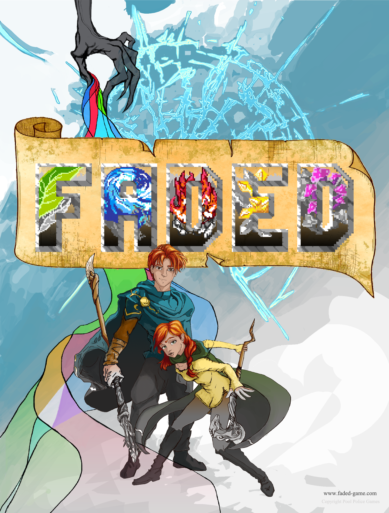

<!-- This is a page partial. For more information, search AngularJS Single Page Architecture -->
<!-- This code will be inserted into the ng-view in index.html -->
<div>
  <div class="span12 mypagecontent thumbnail container">
    <div class="slideContainer">
      <!-- this isn't pretty...yet -->
      
    </div>
    <h1>Faded by Pool Police Games</h1>
    <div>
      <p>
        Tim Karleskint, Max Huhman, and I founded Pool Police Games and started
        building a game. Faded was a 2d action platformer where you start the
        game in black and white and bring color back into the world as you
        progress. Each time you unlocked a new color, you also unlocked a new
        form of magic. If you replayed the Red, Blue, or Green levels in a
        different order, the challenges would be different as the enemies would
        have different abilities based on what colors were unlocked.
      </p>
      <p>
        We had some early success. We exihibted at
        <a href="https://www.paxsite.com/">Penny Arcade Expo (aka PAX)</a> in
        2015 with a playable demo and were
        <a
          href="https://www.ign.com/videos/faded-bringing-a-colorless-world-to-life-pax-south-2015"
          >featured on the front page of IGN with an video on our gameplay</a
        >. We made it through Steam Greenlight so we would have had the ability
        to sell our game on steam (a much harder feat back then than today).
        Missouri S&T even
        <a
          href="https://news.mst.edu/2015/02/missouri-st-students-game-for-opportunity/"
          >published an article</a
        >
        about us to celebrate the success of some of its students. Sadly, we
        never launched Faded. Working on the game was much harder when we were
        all coding full time. Furthermore, we really needed an artist and level
        designer that were full members of the team rather than scraping
        together our own money to pay for art when we could. After a few years
        of on again off again work, we finally threw in the towel. This was a
        great lesson in how important it is to have the right team.
      </p>
      <p>
        All said and done, it was a wonderful experience. Writing a physics
        engine from scratch was super fun. The game felt super snappy and
        satisfying in the hands which made building the physics engine extra
        rewarding. Taking the game to PAX and seeing professionals in the
        industry enjoying it was icing on the cake. 10/10 would recommend.
      </p>
    </div>
  </div>
</div>
